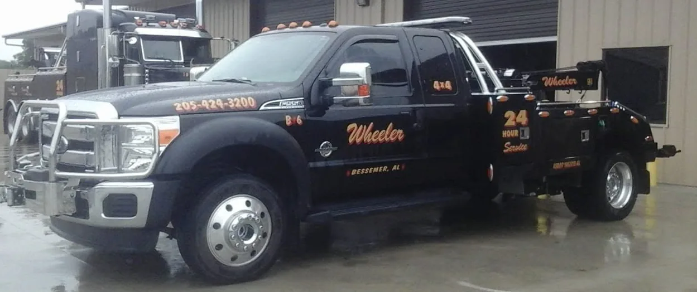

Light-Duty Towing
Cars, SUVs, pickups and classic vehicles
Wheeler service
Light-Duty Towing when you need it.
Everyday and specialty passenger-vehicle towing, including classic cars. Call dispatch to discuss your vehicle, pickup point and destination.
- Passenger vehicles, SUVs and pickups
- Classic cars and careful vehicle transport
- Local and longer-distance towing by arrangement

Discuss your towing request.
Call Wheeler with your vehicle type, pickup location, destination (if applicable) and the details of the situation. For equipment transportation and planned towing, you can also make a non-urgent inquiry.
Need a tow or recovery right now?
Urgent towing and recovery requests must be made by phone. Please call 24-hour dispatch at (205) 424-3200 (Bessemer) or (205) 664-9000 (Alabaster). Forms and email are for non-urgent inquiries only.
24-hour dispatch
Need a tow or recovery?
Immediate assistance is handled by phone. Call the Wheeler location nearest you to discuss your towing or recovery request.